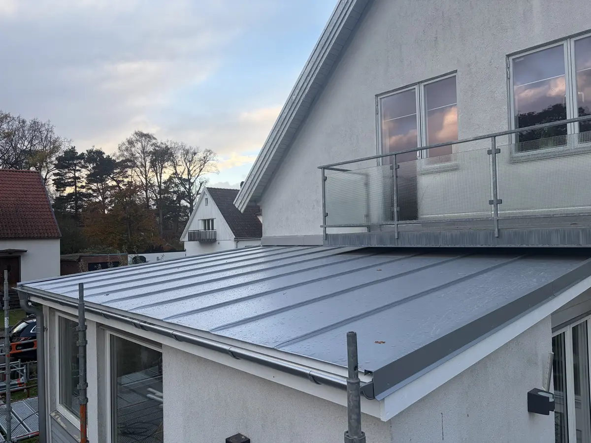
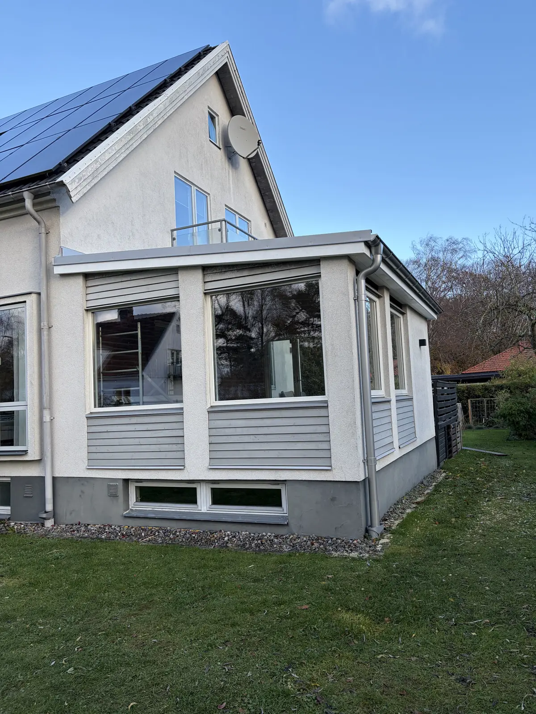

Kontakt
Du berättar om ditt tak, dina behov och vad du vill ha hjälp med.
Din lokala takläggare i Ängelholm
Ett tryggt tak börjar med ett noggrant hantverk. Jag hjälper dig med takbyten, takrenoveringar och kompletta taklösningar.
Från takstomme och underarbete till färdig takläggning. Med över 10 års erfarenhet inom bygg och snickeri erbjuder jag personliga lösningar anpassade efter ditt hus och dina behov.

Takbyte & takrenovering
Taket är en av husets viktigaste konstruktioner. Det skyddar byggnaden mot regn, snö, vind och fukt. Ett väl utfört takarbete handlar därför om betydligt mer än det synliga takmaterialet.
Jag utför takarbeten i Ängelholm och nordvästra Skåne med omnejd. Oavsett om du behöver renovera ett befintligt tak, genomföra ett komplett takbyte eller bygga tak på en ny tillbyggnad hjälper jag dig att hitta en lösning som passar byggnaden.
Vid ett takbyte är underarbetet minst lika viktigt som det färdiga takets utseende. Jag lägger stor vikt vid takkonstruktionen, råsponten, underlagstäckningen och detaljerna som tillsammans skapar ett fungerande tak.
När projektet kräver specialiserade takarbeten, exempelvis bandtäckning, plåtbeslag eller svetsad ytpapp, samordnar jag vid behov arbetet med plåtslagare och pappläggare. Du får en tydlig kontakt genom hela projektet, där de olika arbetsmomenten samordnas.
Så arbetar jag
Du berättar om ditt tak, dina behov och vad du vill ha hjälp med.
Vi går igenom takets förutsättningar, materialval och arbetets omfattning. Du får en kostnadsfri offert.
Arbetet utförs med fokus på noggrannhet, kvalitet och tydlig kommunikation. Andra hantverkare samordnas vid behov.
Vi går igenom det färdiga arbetet tillsammans och säkerställer att överenskomna arbetsmoment är utförda.
Referensprojekt
Ett genomfört takprojekt med bandtäckning och samordning av flera arbetsmoment.

Ett omfattande takprojekt i Ängelholm där taket byttes och försågs med bandtäckning. Jag ansvarade för takstommen, underarbetet och samtliga bygg- och snickeriarbeten samt samordningen av projektet. Plåtarbetet utfördes av plåtslagare.
Projektet visar hur eget hantverk och samordning av andra yrkesgrupper kan kombineras till en komplett taklösning.
ROT-avdrag
Vid takbyte och takrenovering av en befintlig bostad kan du som privatperson ha rätt till ROT-avdrag för arbetskostnaden.
Jag hjälper dig med hanteringen av ROT-avdraget när arbetet uppfyller Skatteverkets villkor. Material, resor och andra kostnader omfattas normalt inte av avdraget.
Läs mer om aktuella regler hos Skatteverket.
Begär kostnadsfri offert →Lokalt hantverk
F. Bergstrand Bygg AB utgår från Ängelholm och utför takarbeten åt privatpersoner och företag i nordvästra Skåne och södra Halland.
Jag tar uppdrag i bland annat Ängelholm, Båstad, Höganäs, Helsingborg, Klippan, Landskrona och Halmstad samt omkringliggande orter.
Är du osäker på om ditt projekt ligger inom mitt arbetsområde? Hör gärna av dig så tittar vi på möjligheterna.
Vanliga frågor
Kostnaden beror bland annat på takets storlek, lutning, konstruktion, materialval och skick. Jag går igenom förutsättningarna för ditt projekt och lämnar en kostnadsfri offert.
Spruckna takpannor, återkommande läckage, fuktskador eller sliten underlagstäckning kan vara tecken på att taket behöver åtgärdas. Takets ålder är också en viktig faktor, men det faktiska skicket avgör vilka åtgärder som behövs.
Tidsåtgången varierar beroende på takets storlek, komplexitet, väderförhållanden och vilka arbeten som behöver utföras. Vi går igenom en planerad tidsram inför projektstart.
Ja. Jag utför takläggning med både tegelpannor och betongpannor och hjälper dig att välja en lösning som passar byggnadens konstruktion och förutsättningar.
Ja. Jag utför bygg- och snickeriarbetena kring taket och kan samordna plåtslagare för bandtäckning och andra specialiserade plåtarbeten.
Ja. Jag utför byte av råspont och reparationer av takkonstruktioner när det behövs. Arbetets omfattning bedöms utifrån takets skick och konstruktion.
Ja, takrenovering och takbyte på en befintlig bostad kan berättiga till ROT-avdrag för arbetskostnaden, förutsatt att Skatteverkets villkor är uppfyllda. Jag hjälper dig med hanteringen.
Ja. Kontakta mig och berätta om ditt takprojekt så går vi igenom förutsättningarna. Jag erbjuder kostnadsfri offert.
Fler byggtjänster
Behöver du hjälp med andra delar av huset? Jag erbjuder ett brett utbud av bygg- och snickeriarbeten för både privatpersoner och företag.
ROT & renovering → Köksrenovering → Altaner & uteplatser → Staket & grindar Fasadrenovering Fönster & dörrar Se alla tjänster →Kostnadsfri offert
Berätta om ditt takprojekt så går vi igenom vad du behöver hjälp med. Jag tar emot nya uppdrag i Ängelholm med omnejd.
F. Bergstrand Bygg AB
Ängelholm